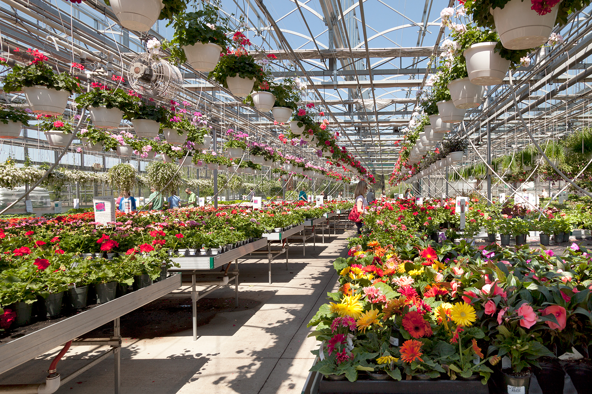
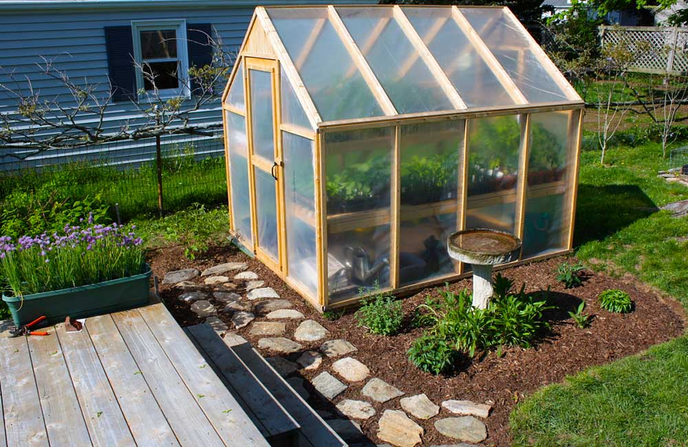
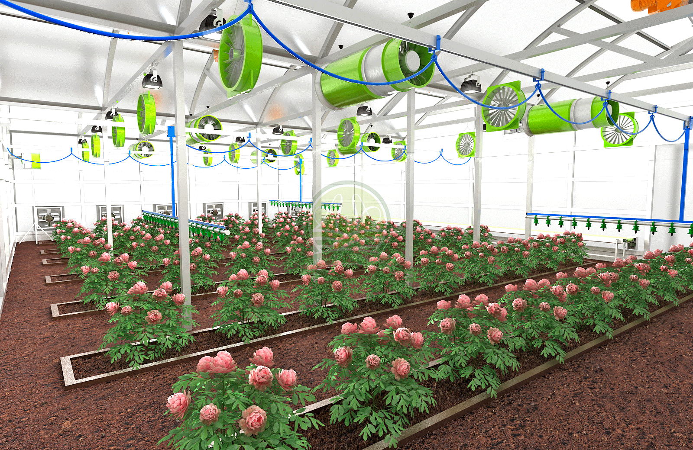

|  |
Es un lugar cerrado accesible a pie que esta destinado al cultivo de plantas, tanto decorativas como plantas de consumo humano o animal, esto con el fin de protegerlas de situaciones climaticas, inapropiadas que pueden suceder en cualquier momento. Comun mente los invernaderos estan dotados de algun tipo de cubierta exterior, traslucida hechas de vidrio o platico, lo cual permite un control mas sencillo de aspectos como temperatura y humedad que favorecen el desarrollo de las plantas dentro de los invernaderos |
|
Los invernaderos permiten crear micro climas artificiales que pueden ser alterar por el bien de las plantas en cultivacion, dicho esto permite que se puedan realizar cultivos de frutas y verduras que en una determinada zona seran imposibles llevarlos a cabo, gracias a este control ambiental, los agricultores pueden generar una mayor produccion a un menor costo y tiempo, adicional a esto los invernaderos ayudan en gran medida a proteger todo tipo de planta o cultivo de multiples predicamentos climaticos, incluso multiples plagas |
 |
|  |
El objetivo de muchas empresas y emprendimientos es mejorar su optimizacion en su produccion aumentando su rentabilidad, esto sin comprometer los costes de produccion. Ha si se buscara controlar lo mas posible todo aspecto de la produccion de sus respectivos productos manteniendo un nivel de calidad alto, bajo esta idea se conciten los invernaderos al ser invernaderos que tienen incorporados censores o algun tipo de tecnologia que tiene la capacidad de enviar informacion oportuna en tiempo real que permite realizar una correcta gestion, de barios aspectos como riesgo, temperatura, humedad, etc. |